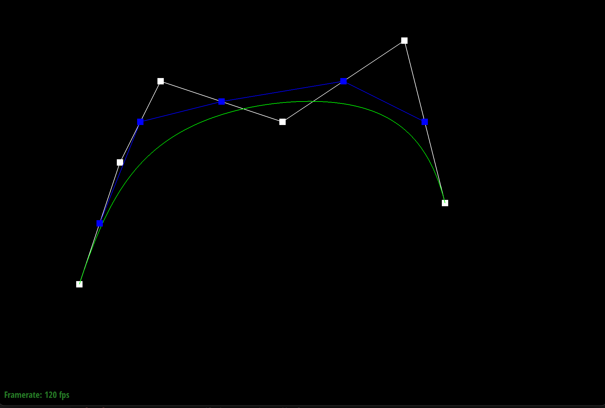
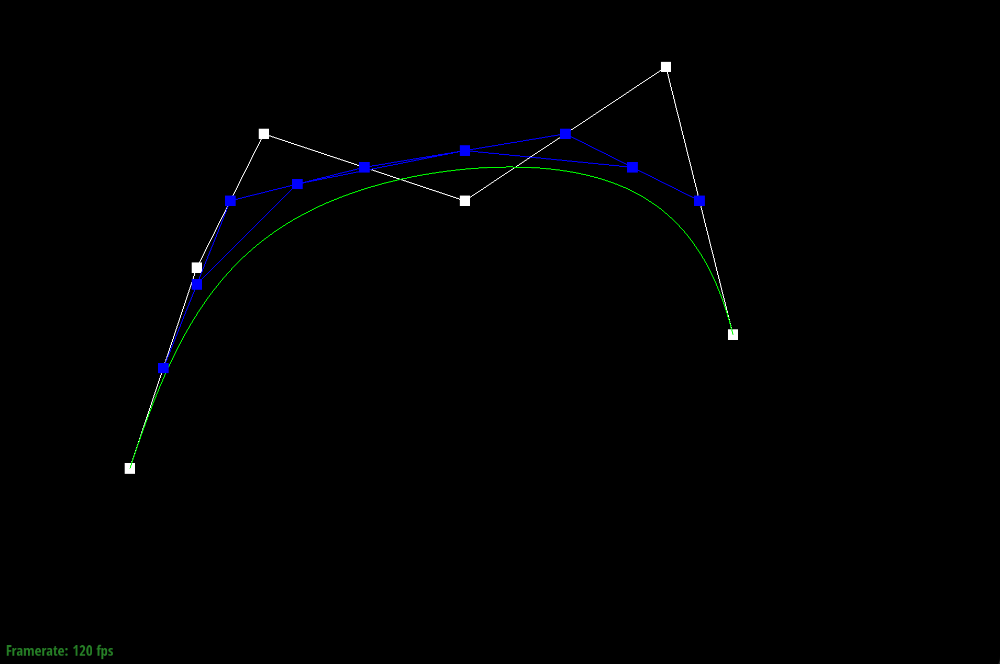
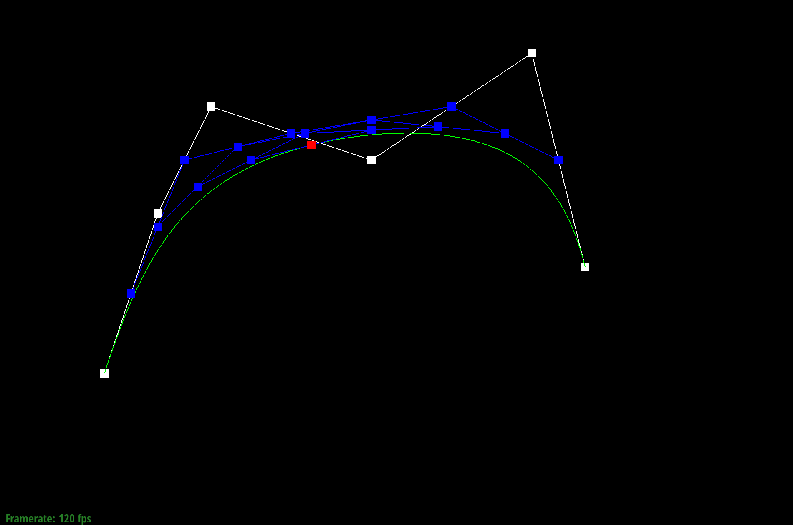

In this assignment, we implemented various various algorithms for mesh editing and geometric modeling. There were three main parts that we worked on in this project: 1) We worked with Bezier curves and surfaces, implementing de Castelijau algorithm, 2) we manipulated the half-edge data structure to split and flip edges, and 3) we implemented loop subdivision for mesh upsampling.
There were many interesting things that we learned from completing this assignment. The main takeaway was that now we understand various techniques and implementations of algorithms that are used to achieve specific goals in the design and manipulation of 3D models. For example, if we want more detail in a specific region of a model, we can use edge splitting to increase the number of triangles in that specific area. Another part that we found really interesting was the way that Bezier curves were implemented. It was crazy to us how all these complicated curves that are used throughout all of graphics is run by a relatively simple de Casteljau's algorithm.
De Casteljau's algorithm is a recursive algorithm that is used to evaluate Bezier curves. The algorithm divides the curve into segments, one segment with each endpoint of the segment for each midpoint between the points. It recursively does this until you can't get the segments any smaller. We than use a parametric paramter, t, that goes from 0 to 1, tracing the bezier curve.
We implemented it by doing just that. We created a 2D vector that stored all the new points in the next step of the de Casteljau's algorithm and by linear interpolating each two points using the parameter t.
|

|

|
|
|
|
|

|
Show a screenshot of a slightly different Bezier curve by moving the original control points around and modifying the parameter \(t\) via mouse scrolling.
In order to extend the de Casteljau algorithm to Bezier surfaces, we just have to treat the two axis as two seperate de Casteljau algorithm calculations. So, we split the data into row and columns and then perform de Casteljau on the rows and then the columns to get the coordinates of the points on the surface, which adds up the results of the row and column calculation.
First, we evaluate each row of control points using de Casteljau which gets us a vector for each row of control points given a scalar interpolation parameter u. We do this by running a loop that goes through the number of points - 1 times through the algorithm since that's how many times it takes to find the final vector. After doing that, we run a de Casteljau on the results of running the algorithm on the rows with a different scalar interpolation parameter, v, and that gives us the final vector given two parameters, u and v.
We implemented the area weighted vertex normals by doing the following. 1) get the half edges that correspond to a triangle by using next, 2) get the vertex coordinates that correspond to each of the half edges, 3) calculate the vectors that make up the triangle by subracting vertex positions, 4) get the direction of the normal by taking the cross product of two vectors and dividing by the norm of the cross product, and finally 5) use heron's formula to get the area of the normal and multiply by the result of step 4.
We implemented the edge flip by drawing out the diagram and naming all the half edges and then determining what the final diagram should look like after the flip. For this, it was just a matter of setting the correct elements with the setNeighbors function correctly.
We essentially used a diagram similar to this, but instead we labeled our verticies a, b, c, d and went in a counter-clockwise direction. So, we just set every edge, half-edge, vertex, and face, and then we set the correct element references based on the diagram. We did not need to create new elements for the edge flip, so we just reassigned the correct references for each element.
After we initially implemented flip, we thought everything went perfectly and we celebrated. But, then we tested it while toggeling the lighting, and for every triangle that we flipped an edge for, it would just be dark. We realized that it probably had something to do with setting the references incorrectly, so we went back and double checked that we really set the reference for every element, and realized that we missed setting the half edges for all the verticies.
The way we approached the edge split operation was similar to the way that we did the edge flip operation. We used a diagram that was given in the project description with verticies a, b, c, and d and then we set the correct elements for each half-edge, going from top-left triangle to the bottom right triangle. We had elements like HalfedgeIter bc_to_mc = e0->halfedge(); that would turn the old elements into elements in the new triangle.
To reiterate, we declared all our variables for each element in our new triangle and then we should just set each element's references based on the diagram. We made sure to set the verticies' half edges and the faces. For this one we had to create 3 new edges, 6 new half edges, 1 new vertex, and 2 new faces. For the other elements, we just needed to reassign their references.
We experienced a similar issue with the edge flip, where visually everything looked fine, but when we pressed Q to toggle the normals, it was just dark at the parts where we split the triangle. This led us to think that we set the references wrong or we were missing some, but it was really hard to spot the error using the diagram we used. So, we switched the diagram shown in the edge split part which verticies v0, v1, v2, and v3. We just set all the elements up in the beginning and then made sure that we created new edges (e5, e6, e7), new half-edges (h10, h11, h12, h13, h14, h15), a new vertex (v4), and new faces (f2, f3).
N/A
We implement loop subdivision with four steps.
1) We calculated the new position of each of the verticies with this equation (1 - n * u) * original_position + u * original_neighbor_position_sum. So, we sum neighbor positions by iterating through the next of the twin of the half-edge starting with the one corresponding to the original vertex, which would get the verticies that surround a vertex. We also count n, the number of vertex neighbors, and u (3/16 if n=3 otherwise 3/(8n)). We set the vertex->newPosition to this value.
2) We then go through all the edges and that we haven't split already. We do this by maintaing a isNew boolean in the elements. The new edges and vertex that we create when we split will have their isNew set to true. Then when we decide whether to split an edge or not, we check that isNew is false and that none of the edges verticies are new.
3) We flip every new edge that connected an old vertex and a new vertex.
4) We set the position of each vertex to their newPosition.
The sharp edges and corners become more smooth after upsampling. If we pre-split the edges, then there will be more sharpness int he edges and corners. The second image is an upsampled version of the first one, and the third one is an upsampled version of the first one, but with pre-processed edges to bring back the sharpness.
We can see here that after 4 iterations of loop subdivision, the cube becomes more assymetrically shaped. This occurs because the mesh itself is not symmetrical, so once we upsample, it will be evident that the mesh is not assymetrical.
But, instead if we pre-process the cube and split each edge on each of the faces, the mesh will become symmetrical and we can see after 5 iterations of loop subdivision it is much more symmetrical than it was before the pre-processing.
N/A
N/A
N/A
N/A